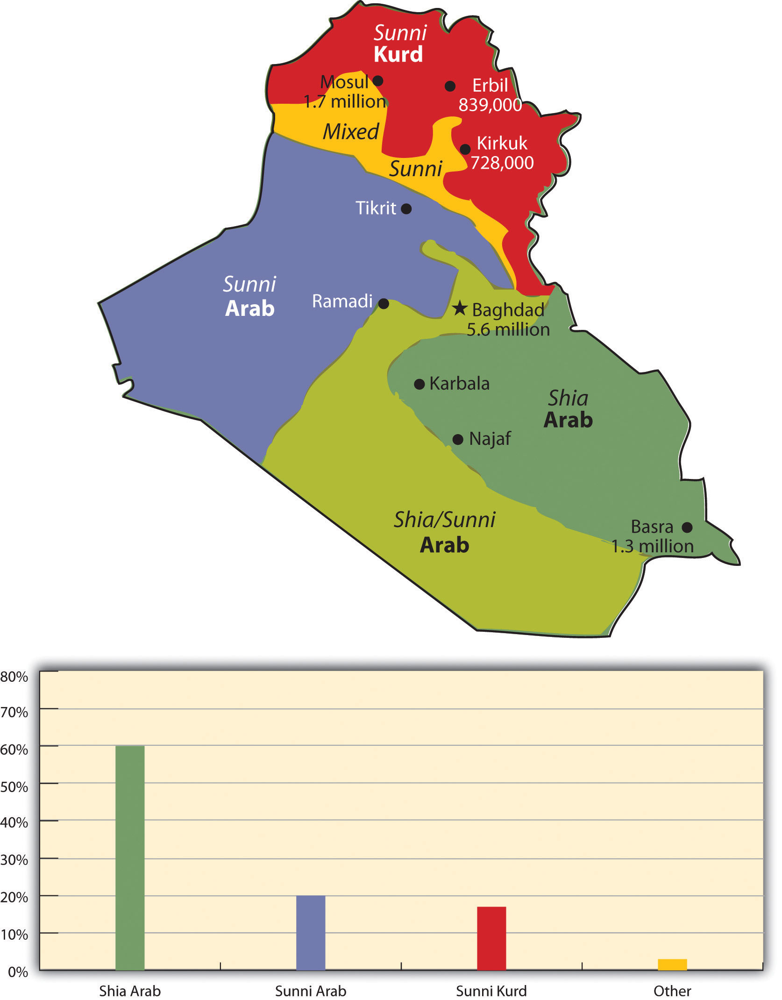
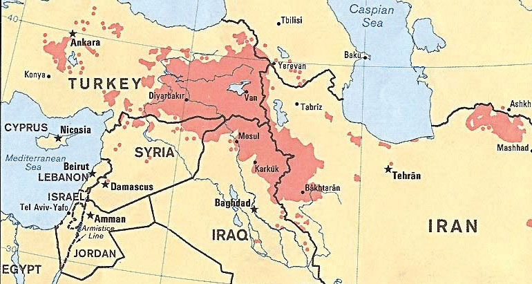
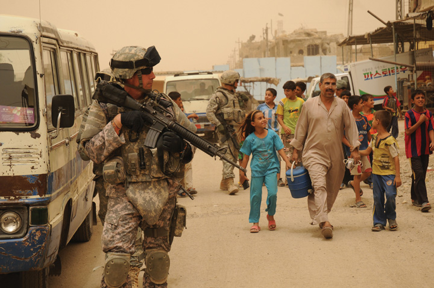
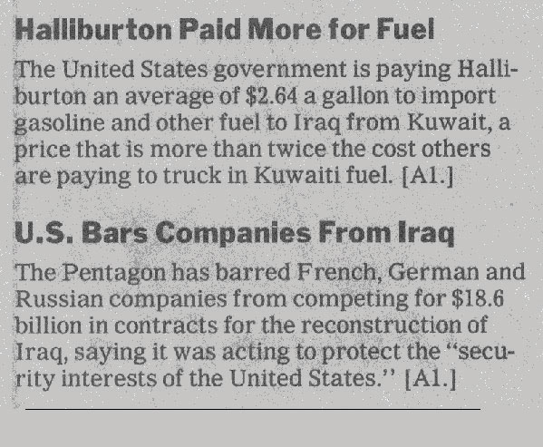
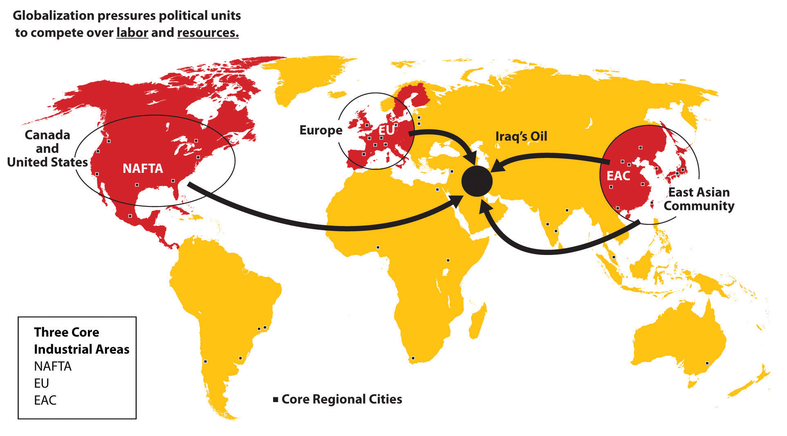
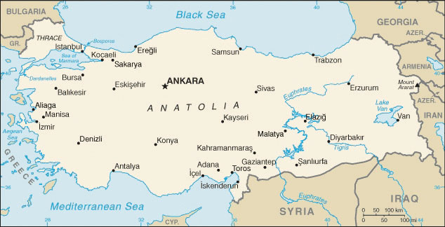
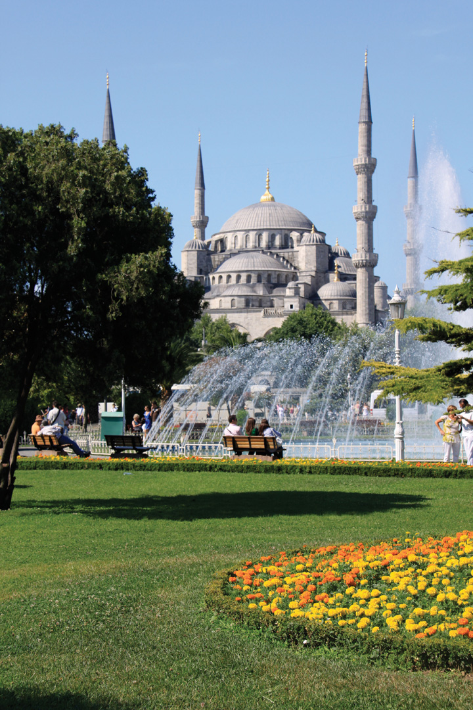
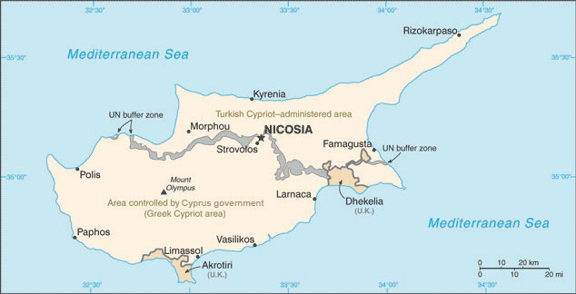
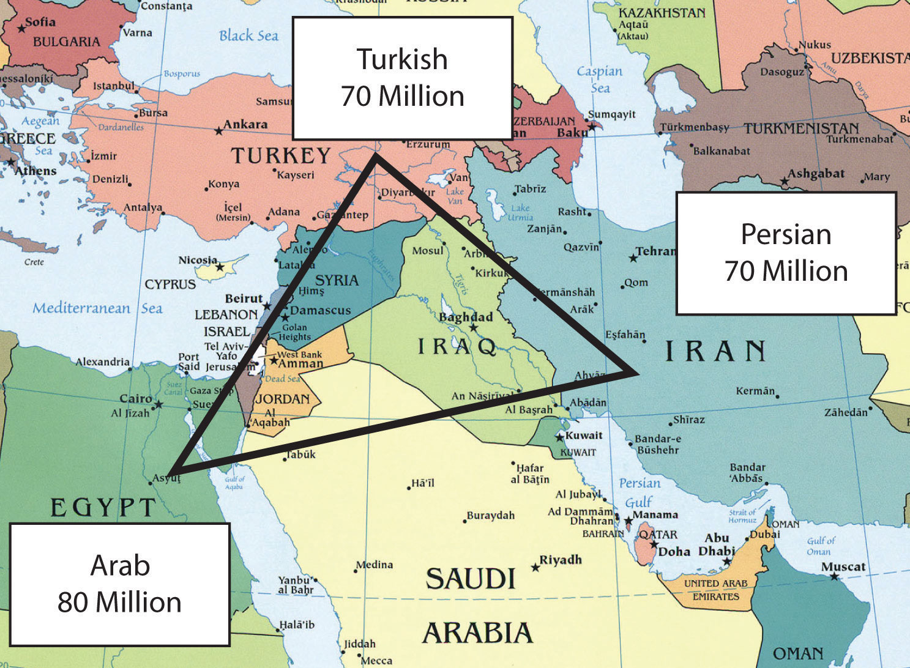
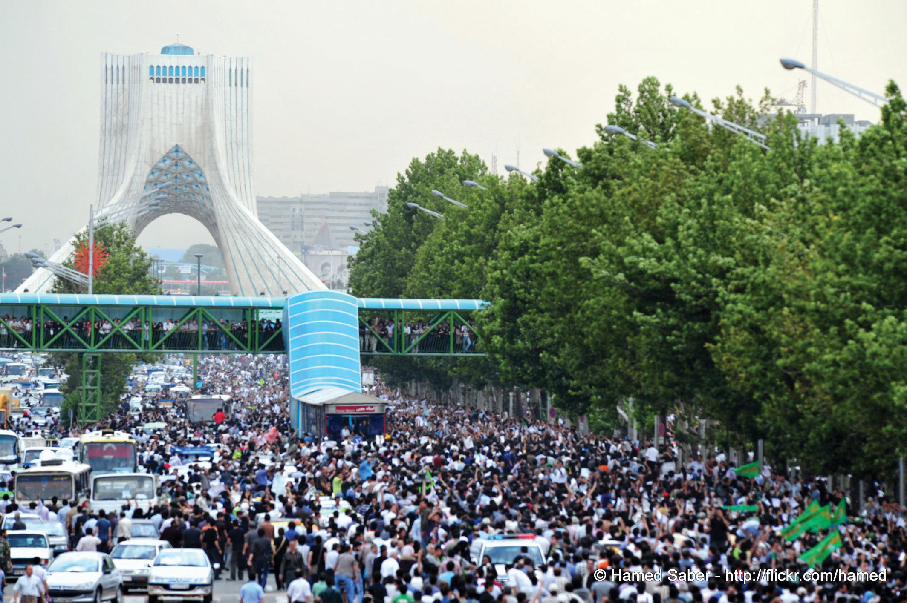

Figure 8.45 The Tigris and Euphrates Rivers and the Shatt al-Arab Waterway between Iraq and Iran

Source: Map courtesy of CIA World Factbook.
Iraq lies in the Fertile Crescent between the Tigris and Euphrates Rivers, where the ancient civilizations of Mesopotamia were established. Ancient cities such as Nineveh, Ur, and Babylon were located here. Present-day Iraq and Kuwait were established out of the British Mandate territory gained following Britain’s defeat of the Turkish Ottoman Empire. Britain established straight-line political boundaries between Iraq and Jordan, Syria, and Saudi Arabia. These types of boundaries are called geometric boundariesPolitical boundaries based on straight lines rather than physical features. because they do not follow any physical feature. In 1961, when Britain withdrew from the region, the emir controlling the southern region bordering the Persian Gulf requested that Britain separate his oil-rich kingdom as an independent country. This country became Kuwait, and the rest of the region became Iraq. After a series of governments in Iraq, the Baath party came to power in 1968, paving the way for Saddam Hussein to gain power in 1979.
Figure 8.46 Iraq’s Divisions of Islam as of 2008
The two ethnic divisions are Arab and Kurd. The two religious divisions of Islam are Shia and Sunni. Karbala and Najaf both have holy sites for Shia Muslims.
In 1980, a disagreement arose over the Shatt al-Arab waterway in the Persian Gulf on the border between Iraq and Iran, and the feud led to war between the two countries. The people of Iran are not Arabs; their ethnic background is Persian. Most Iranians are Shia Muslims. Saddam Hussein and his Baath party were Arabs and Sunni Muslims. Ethnic and religious differences thus fueled the conflict. The Shatt al-Arab waterway was quickly filled with wrecked ships. The local battle escalated into an all-out war, which ended in 1988 without anyone declaring a victory. The Iran-Iraq War was as close to World War III as the world has ever seen, with more than a million casualties and a cost of more than one hundred billion dollars. World powers aligned themselves with one side or the other. Before the war, the Iranian government had been taken over by Islamic fundamentalists who opposed the US intervention in the region; therefore, in the Iran-Iraq War, the United States supported Hussein and provided him with industrial supplies and materials.
After the Iran-Iraq War, Saddam Hussein looked to Kuwait to gain new oil wealth and expand access to the Persian Gulf. By taking over Kuwait, Iraq would gain an excellent port on the Persian Gulf and earn more income from oil reserves. Hussein accused Kuwait of slant drilling oil wells along the Iraqi border and removing oil that was legally Iraq’s. It was common knowledge that both sides were engaged in this practice, but it was the excuse Hussein needed to invade Kuwait and reclaim it as the nineteenth province of Iraq.
In 1990, the Iraqi military invaded and occupied Kuwait. Though the world community opposed this action, it was not until Hussein nationalized all the oil assets of the international oil corporations that resistance was organized. Under the leadership of US president George H. W. Bush, the United Nations (UN) organized a military coalition to remove Hussein from Kuwait. On January 16, 1991, Operation Desert Storm began. After forty-five days of fighting, Iraq was overwhelmingly defeated and its military was ousted from Kuwait. This was a major victory for the coalition. It was during this time that President Bush publicly announced the emergence of the potential New World Order. Kuwait was not a democracy but a monarchy ruled by an emir. Clearly, the war was not a war over democracy; it was a war over the control of resources.
When it became evident that Hussein would lose Kuwait, his forces dynamited all the oil facilities and set all the oil wells in Kuwait on fire. His position was that if he could not have the oil, then nobody would. This was one of the worst environmental catastrophes regarding oil on record. Oil flowed into the Persian Gulf and covered the water’s surface up to three feet thick. Most mammals, birds, and organisms living on the water’s surface died. Oil flowed out onto the desert sand into large petroleum lakes. The air pollution caused by burning oil wells dimmed the sun and caused serious health problems.
To keep Iraq from breaking apart after Operation Desert Storm, coalition forces allowed Hussein to remain in power. Ethnically and religiously, Iraq is divided into three primary groups that generally do not get along. Sunni Arabs dominate central Iraq in a region often referred to as the Sunni Triangle, which includes the three cities of Baghdad, Tikrit (Hussein’s hometown), and Ramadi. Sunnis were the most loyal to the Hussein government. Southeastern Iraq is dominated by Arabs who follow the Shia division of Islam, which is also followed by most of Iran’s population. A group that is ethnically Kurdish and follows the Sunni division dominates northern Iraq. Kurds are not Arabs or Persians; rather, they originated from somewhere in northern Europe centuries ago with their own religion, language, and customs. Many have converted to Islam.
Hussein was a Sunni Muslim, and when he was in power, he kept the other two groups in check. He used chemical weapons on the Kurds during the Iran-Iraq War. In 1988, he used chemical weapons on the Kurdish town of Halabja and killed about 10 percent of the eighty thousand who lived there. Thousands of Kurds died in other attacks, and thousands more continue to suffer serious health effects. After Operation Desert Storm, Hussein pushed the Kurds north until the UN and the United States restricted him at the thirty-sixth parallel, which became a security zone for the Kurds. The Arab Shia population in the south often clashed with Hussein’s military in an attempt to gain more political power, and Hussein subjected them to similar harsh conditions and treatment.
Figure 8.47 Homelands of the Kurdish People, Indicated by the Shaded Areas
Future Kurdistan would be the main portions in Iran, Iraq, and Turkey and a corner of Syria. The city of Diyarbakir in Turkey would be the Kurdish capital city.
Source: Map courtesy of University of Texas Libraries, http://www.lib.utexas.edu/maps/middle_east_and_asia/kurdish_86.jpg.
The Arab Shia population in the southeast makes up most of the Iraqi people. The two main cities of Karbala and Najaf contain holy sites for Shia followers worldwide. The Shia population is three times larger than the Kurdish population in Iraq; more Kurds live outside Iraq than live in Iraq. The Kurds are the largest nation of people in the world without a country. About twenty-five million Kurds live in the Middle East, and most—about fourteen million—live in Turkey. About eight million Kurds live in Iran, about seven million live in Iraq, and a few others live in neighboring countries. At the 1945 conference of the UN, they petitioned to have their own country called KurdistanProposed state to include all Kurds in the Middle East. carved out of Iran, Iraq, and Turkey, but they were denied. You will recall from Section 8.4 "Israel and Its Neighbors" that Israel was approved to become a nation at the same UN conference.
After the September 11, 2001, attack on the United States, there was a renewed interest in weapons of mass destruction (WMD)Chemical, nuclear, or biological weapons that could cause the deaths of innocent civilians on a massive scale.. Knowing that Hussein had used chemical weapons on the Kurds, the Iranians, and the Shia, there was a concern that he would use them again. UN Weapons inspectors in Iraq never could confirm that Hussein retained WMD. They had been destroyed, moved out of Iraq, or hidden. US president George W. Bush decided to invade Iraq in 2003 to remove Hussein from power. In the invasion, Hussein’s two sons were killed and Hussein was captured. One aspect of the invasion plan was to use Iraq’s vast oil reserves to help pay for the cost of the war, which quickly ballooned to more than a billion dollars a week. Fundamentalist Islamic insurgents made the war difficult.
The US invasion of Iraq brought about the removal of the Baath Party from power and Iraq came under a military occupation by a multinational coalition. An Iraqi Interim Government was formed that assumed sovereignty in 2004. A new constitution was drafted and approved by vote of the Iraqi people. Elections were held and a new government was formed under the newly drafted constitution. Occupying troops continued to remain as the country struggled to adapt to the reforms. Insurgencies developed that brought about an increase in violence that peaked in about 2007. By 2010, the combat operations by occupying troops were ending and the country worked to sustain stable political conditions. Under an agreed upon mandate all combat troops were to withdraw as of the end of 2011. A number of US troops will remain in Iraq in an advisory capacity.
Figure 8.48 Soldiers from the 926th Engineer Brigade Combat Team and the Army 432d Civil Affairs Battalion Patrol in Baghdad’s District of Sadr City
The United States invaded Iraq in 2003 and removed Saddam Hussein from power.
Source: Photo courtesy of the US Department of Defense, taken by Tech Sgt. Cohen A. Young, 2008.
In geographic terms, the Persian Gulf War and the Iraq War were wars over resources—namely, oil. Wars have historically been fought over territory and resources. When the United States invaded in 2003, Hussein was contracting billions of dollars worth of projects to oil companies in France, Russia, and China. Other support projects were contracted out to other European countries. When the United States invaded, the contracts with were summarily canceled, and British and US oil contractors took over the projects.
Figure 8.49 News Reports of Iraqi Contracts at the Time of the US Invasion of Iraq
After the US invasion, many of the contracts Iraq had with other countries were canceled.
Source: New York Times, December 10, 2003.
Iraq is an example of the second wave of globalization. Neocolonialism has been the dominant force in Iraq’s economy since before the Persian Gulf War. Industrialization requires high energy demands; therefore, the industrialized countries of the world consume energy on a massive scale. Iraq is not a core economic country, but it holds vast petroleum reserves, making it vulnerable to exploitation by industrialized core countries. It is interesting to note that the Persian Gulf War, initiated in response to Iraq’s invasion of Kuwait, can be traced directly to globalism. It was Britain that established the straight-line borders separating Kuwait and Iraq. The war over the control of Kuwait in 1991 was a war over the control of resources, just as the ongoing competition between Sunni Muslims and Shia Muslims, for example, is a competition for the control of political power or resources and not a competition related to ethnic principles.
Figure 8.50 The Three Core Economic Areas of the World That Consume High Levels of Energy
The East African Community (EAC) is not an official organization but a core economic area.
Hussein proved to be a destabilizing force and a potential threat to the established so-called New World Order of global security and trade as outlined by US president George H. W. Bush. The removal of Hussein from power brought to the surface the competition between the trilateral powers of North America, Europe, and East Asia. It remains to be seen who will have control of or access to Iraq’s natural resources.
There are many connections between the administration of former US president George W. Bush and the international oil industry. Bush once owned the failed Texas oil company Arbusto Energy and was president of Spectrum 7 Energy Corporation, which bought out Arbusto. Bush was also on the board of Harken Energy Corporation when it bought out Spectrum 7 Energy. Bush’s father, former US president George H. W. Bush, owned the Zapata Oil Company, which drilled the first offshore Kuwaiti oil well and later merged to become Pennzoil. US vice president Dick Cheney was CEO of Halliburton, the world’s most extensive oil service company. Commerce Secretary Donald Evans was former CEO of Tom Brown Inc., an independent oil and gas company based out of Denver. Secretary of State Condoleezza Rice was a Chevron Corporation board member and had an oil supertanker named after her—the Condoleezza Rice. The former US secretary of state under former president George H. W. Bush (Sr.) was James Baker III, who had been a central attorney for an oil consortium building one of the largest oil pipelines in Central Asia. President George W. Bush appointed Zalmay Khalilzad, a former aide to the American oil company UNOCAL, as special envoy to Afghanistan, then as ambassador to Iraq, and then to the UN.
Figure 8.51 Vice President Dick Cheney and Secretary of State Condoleezza Rice During the US Presidential Administration of George W. Bush
Source: Photo courtesy of the White House, taken by David Bohrer, 2006.
The globalized economy forces political units to compete over valuable resources, which often results in the blending of those in leadership roles in the corporate world with those in positions of power in the political arena. The top personnel in the George W. Bush administration (2001–9) is an example of the relationships that develops between corporate leaders and political leaders. In this case, the relationship centered on the oil industry.
Turkey is the only remaining country of the vast Ottoman Empire, which ruled the region for seven hundred years (1299–1923 CE). When the empire was at its peak in the sixteenth and seventeenth centuries, it controlled parts of Europe, North Africa, the Middle East, and Arabia. Located on the Bosporus—the straits that connect the Black Sea with the Mediterranean Sea—the ancient city of Constantinople was the capital of the Ottoman Empire. Called Istanbul today, this city is the largest in Turkey, but it is not the current capital. Turkey moved its capital to Ankara on the Anatolian Plateau, which is centrally located in Turkey.
Turkey has a small portion of its land area on the western side of the Bosporus to claim its connection to Europe. Most of Turkey’s land area is a part of the Asian continent, and Turkey has often been referred to as Asia Minor. Mountains on Turkey’s eastern border with Armenia include Mount Ararat, which is the highest peak in the country at 16,946 feet in elevation. Legend has it that Mount Ararat was the resting place of the legendary Noah’s ark. The people of Turkey are neither Arab nor Persian; they are Turkish and speak the Turkish language. As much as 90 percent of the Turkish population is Sunni Muslim, which is similar to many of the other Muslim countries in the Middle East.
Figure 8.52 Turkey
The map shows the portion of Turkey in Europe to the west, the central Anatolian Plateau, the Euphrates and Tigris Rivers, and Mount Ararat on the Armenian border.
Source: Map courtesy of CIA World Factbook.
Turkey is an established secular democracy with a democratically elected political leadership. To maintain its democracy, it has had to deal with Islamic fundamentalists, who often have supported a shift to an Islamic religious state. Turkey has also had to negotiate with its neighbors, Syria and Iraq, over water rights to the Tigris and Euphrates Rivers, which originate in Turkey but flow through the other countries. Turkey has built dams on these rivers, much to the dismay of its neighbors, who want to use more of the water.
Turkey borders northern Iraq and was home to fifty-six million Turks and fourteen million Kurds as of 2010. The Kurdish claim of a homeland in eastern Turkey has not been recognized by the Turkish government. Open rebellion has been expressed by Kurdish groups wishing to become independent of Turkey, but the Turkish government has oppressed any movement toward independence. Many Kurds have migrated to Istanbul in search of work. They live and work in Istanbul and send money back to their families in eastern Turkey. The large city of Diyarbakir in eastern Turkey is predominantly Kurdish and is considered by many Kurds as the city that would be their capital if they had their own country of Kurdistan.
Figure 8.53 A City Park outside the Blue Mosque in Istanbul
The capital city of Turkey is Ankara, which is located in the center of the country. Istanbul remains the primate city of the country and is home to various world-class mosques.
Source: Photo courtesy of Jeremy Vandel, http://www.flickr.com/photos/jeremy_vandel/3742592396.
Turkey is a member of the North Atlantic Treaty Organization (NATO) and has been a US ally. The United States has been allowed to have military bases in Turkey, which were helpful in Operation Desert Storm during the First Persian Gulf War. In spite of being allies, Turkey did not allow the US military to use these bases as direct invasion points when the United States invaded Iraq in 2003. The Iraq War is a major concern for Turkey, since Turkey has a major stake in the stability of the Middle East. Possessing a small portion of its land area in Europe and being a member of NATO provides Turkey with an opening to join the European Union (EU), but so far it has been denied membership, mainly because of Turkey’s controversial human rights record, conflicts with the Kurds, disagreements with Greece over Cyprus, and low economic indicators. Conditions are improving, and at some future point Turkey may have an opportunity to join the EU.
To date, the EU does not have an Islamic country in its membership; Turkey may be the first. The country has various ways of gaining wealth that could help support Europe’s other industrial activities. Turkey grows large quantities of food in the central Anatolian Plateau; vast fields of grain extend across this central plateau. Turkey also has some oil resources in the east and minerals in the mountains bordering Armenia and Georgia.
The island of Cyprus in the eastern Mediterranean Sea is officially a part of Europe and a member of the EU. The island is separated by the Green Line, monitored by the UN, which divides the Greek-dominated south from the Turkish-dominated north. The two sides have been separated since a civil war in 1974. Turkish groups in the north have declared their half of the island the independent Turkish Republic of Northern Cyprus. Turkey is the only country that recognizes this proclamation; the rest of the world considers the whole island the Republic of Cyprus.
Figure 8.54 Divided Cyprus
The island of Cyprus is divided by the Green Line, which is monitored by the UN. Turkish Cypriots control the north and have declared it the Turkish Republic of Northern Cyprus. Greek Cypriots control the southern half of the island. The whole island is considered one country by the UN, which does not recognize the Turkish Cypriots’ claim to independence.
Source: Map courtesy of CIA World Factbook.
Iran covers a physical area larger than the US state of Alaska. It is a land of mountains and deserts: Iran’s central and eastern regions are mainly desert with few inhabitants, and the northern and western regions of the country are mountainous. The Elburz Mountains in the north around the Caspian Sea reach as high as eighteen thousand feet in elevation near the capital city of Tehran. The Zagros Mountains run along the border with Iraq and the Persian Gulf for more than nine hundred miles and can reach elevations greater than fourteen thousand feet. Similar to the Atlas Mountains in the Maghreb, Iran’s mountains trap moisture, allowing minor agricultural activities in the valleys. Most of Iran’s population lives in cities along the mountain ranges. Qanats—systems of shafts or wells along mountain slopes—bring water from the mountains to the valleys for irrigation and domestic use.
Figure 8.55 2010 Population Estimates for the Ethnic Triangle of the Middle East, with Egypt, Turkey, and Iran Anchoring Each Corner
Source: Updated from map courtesy of University of Texas Libraries, http://www.lib.utexas.edu/maps/middle_east_and_asia/txu-oclc-192062619-middle_east_pol_2008.jpg.
Iran was once the center of the Persian Empire, which has its origins as far back as 648 BCE, and the country was called Persia until about 1935. The Ethnic Triangle of the Middle East consists of Persians in Iran, Turks in Turkey, and Arabs in Arabia (see Figure 8.55 "2010 Population Estimates for the Ethnic Triangle of the Middle East, with Egypt, Turkey, and Iran Anchoring Each Corner"). Most of the seventy million people in Iran are Persian. Iran has a long history with the ancient Persian Empire and the various conquering armies that followed it. During the rise of Islam, Iran had major contributions to the arts, mathematics, literature, philosophy, and science. The highly advanced carpet-weaving traditions from centuries past are but one example of the advancements in design and the technical expertise of the people. The country’s Persian identity and culture continued throughout the centuries under different ruling powers. The Persian language remains and is a branch of the Indo-European language family. Arabic is widely used as a second language and a language used in science, which was helpful in reaching a broader audience and reaching out to the regional community with academic and scientific findings.
Figure 8.56 Main Mountains and Desert Areas in Iran

Source: Updated from map courtesy of University of Texas Libraries, http://www.lib.utexas.edu/maps/middle_east_and_asia/iran_rel_2001.jpg.
In 1971, Iran celebrated the 2,500th anniversary of Persia’s first monarchy. The monarchy was ruled by a shah, which is a title for the sovereign leader in Iran similar to a king. The shah’s royal family ruled Iran from 1923 to 1979, when Islamic fundamentalists took control of the government. It was during this revolution on November 4, 1979, that Ayatollah Ruhollah Khomeini, who had previously been exiled by the shah, urged Iranians to oppose US activities in Iran. Iranian students stormed the US embassy and took US citizens hostage. Fifty-two Americans were held for 414 days during the US presidency of Jimmy Carter. The hostages were released the day that US president Ronald Reagan took office. Khomeini indicated he had not been aware of the students’ plan but supported it. This is one reason the United States backed Saddam Hussein in the Iran-Iraq War of the 1980s. Khomeini ruled Iran until his death in 1989. Since then, Iran has been an Islamic state with an ayatollah as the Supreme Leader. An ayatollah is a high-ranking Shia cleric that is an expert in the Islamic faith and the Sharia (Muslim code of law based on the Koran). There are cases where women have reached the same status as an ayatollah and known as Lady Mujtahideh. Approximately 90 percent of Iran’s population follows the Shia division of Islam.
On the international front, Iran’s leadership has indicated a drive to develop nuclear weapons and use them against Israel, which has caused concern in the global community. The government of Iran does not recognize the legitimacy of the nation of Israel. US president George W. Bush included Iran, along with Iraq and North Korea, in his 2002 Axis of EvilTerm used in a 2002 speech by US president George W. Bush referring to Iraq, Iran, and North Korea for their aspirations to acquire chemical, biological, or nuclear weapons and their support of terrorist activities. speech, the focus of which was the lack of democratic freedoms and the restrictive measures of the Islamic fundamentalist government. Iran is similar to Saudi Arabia in its restrictions of civil rights. A number of countries including the United States have placed trade sanctions against Iran regarding any materials associated with nuclear weapons or missiles. The US sanctions extend to an almost total trade embargo against Iran stemming from the 1979 revolution.
Open protests expressing a need for change have periodically erupted in the streets of Tehran. Ultimately, protesters are seeking personal freedoms and a more open society. The Arab Spring of 2011 was a phenomenon that spread across North Africa, the Arabian Peninsula, and the Middle East. Iran was not immune from the impact of the protests and demonstrations that occurred in their neighboring countries, but Iran was different. First of all, Iranians are not Arab but Persian in their ethnicity. Their history and heritage creates a distinct identity that separates them from the rest of the region. Many Iranian citizens want the same outcomes that the protesters and demonstrators want in the countries experiencing the Arab Spring revolutions. The difference is that Iranians have been demonstrating and protesting issues with their government in the years before 2011. Political tensions in Iran have been high since the 2009 elections and even earlier. During the 2009 election in Iran, students and other individuals used the Internet, Twitter, and cell phones to organize a massive protest against the current president and in support of opposition candidates. The demonstrations were called the Twitter Revolution.
Figure 8.57 Twitter Revolution in Iran
During the 2009 election in Iran, students and other individuals used the Internet, Twitter, and cell phones to organize a protest against the current president and in support of opposition candidates. The demonstrations were called the Twitter Revolution.
Source: Photo courtesy of Hamed Saber, http://www.flickr.com/photos/44124425616@N01/3630995595.
Iran is at a crossroads in the conflict between conservative Islamic fundamentalists and Islamic reformers. The government of the Islamic state is controlled by Muslim clerics who tend to be more conservative in their rulings, but the young people are mainly on the side of the democratic reformers. Young people are becoming more familiar with Western culture. For example, the unofficial holiday of Valentine’s Day has become extremely popular in Iran and is celebrated by a large sector of the population, mainly young people. In an effort to curb the influence of Western culture, on February 13, 2011, the government of Iran officially banned all symbols or activities associated with Valentine’s Day. One claim was that the day was named after a Christian martyr and therefore was not supportive of Islam.
Iran has abundant oil and natural gas reserves that are being exploited to form the base of their economy. Iran holds about 15 percent of the world’s reserves of natural gas, which is second only to Russia.“Greatest Natural Gas Reserves by Country, 2006,” Infoplease, http://www.infoplease.com/ipa/A0872966.html. In 2010, the country was the fourth-largest oil exporter in the world and held about 10 percent of the world’s known oil reserves.http://www.opec.org/opec_web/static_files_project/media/downloads/publications/ASB2010_2011.pdf. The UN has classified Iran’s economy as semideveloped. The government has taken control of the oil and natural gas industry and implemented a type of central planning over many major businesses. Small-scale agriculture and village trading activities are not usually owned by the government. The Caspian Sea provides for fishing and has oil reserves under the seabed. Oil and gas revenues make up most of the state’s income. However, fluctuations in commodity prices have resulted in a more volatile income stream, and Iran’s manufacturing base has been increasing to support a more diversified economy.
Identify the following key places on a map: